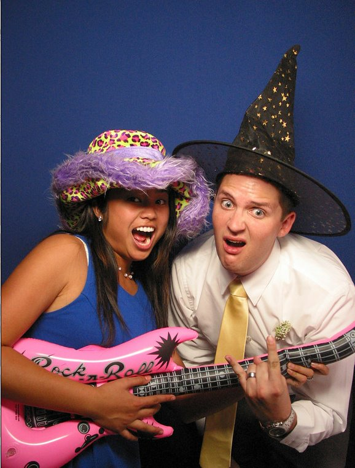

Dominic and Ashley met during her freshman year of high school.
They both were in the saxophone section. They were friends all through high school. It wasn't until Dominic's last
month in high school that they started dating. He was about to leave for Drum Corps when the began dating. For
three months, they cultivated their relationship long distances.
Fast forward 3 years later, and they got engaged in Cape May, New Jersey. It was a lovely night. Dinner a
small restaurant near the beach. Then a nice walk on the beach where he went on one knee and proposed.
They then got married on June 2, 2012, 4 years exactly after they began dating. Their story has just begun,
and soon will have many stories to tell!